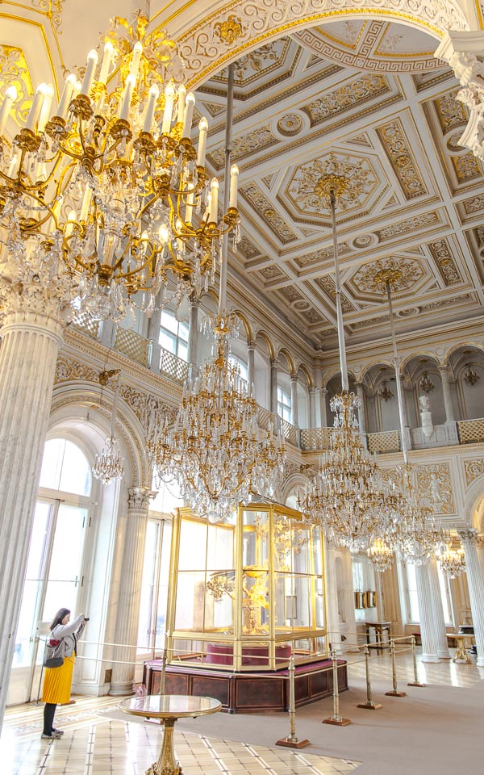
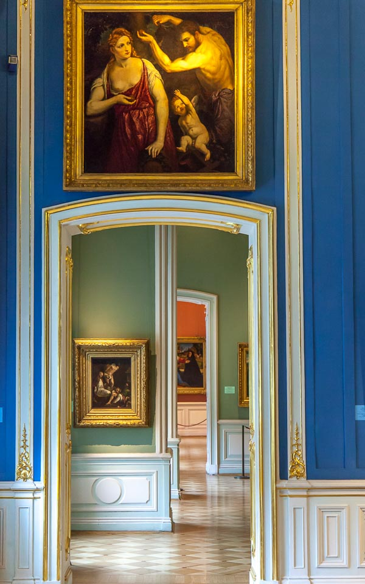
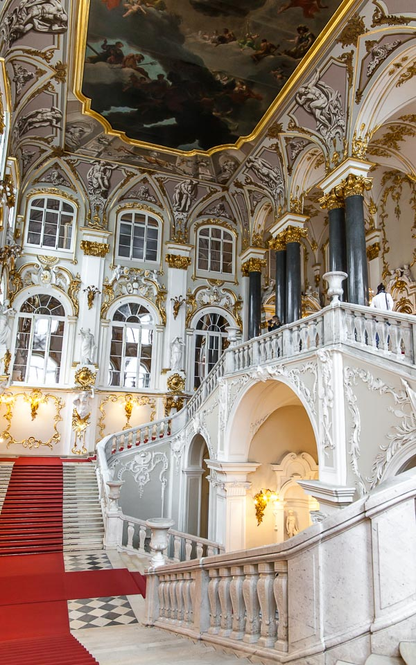
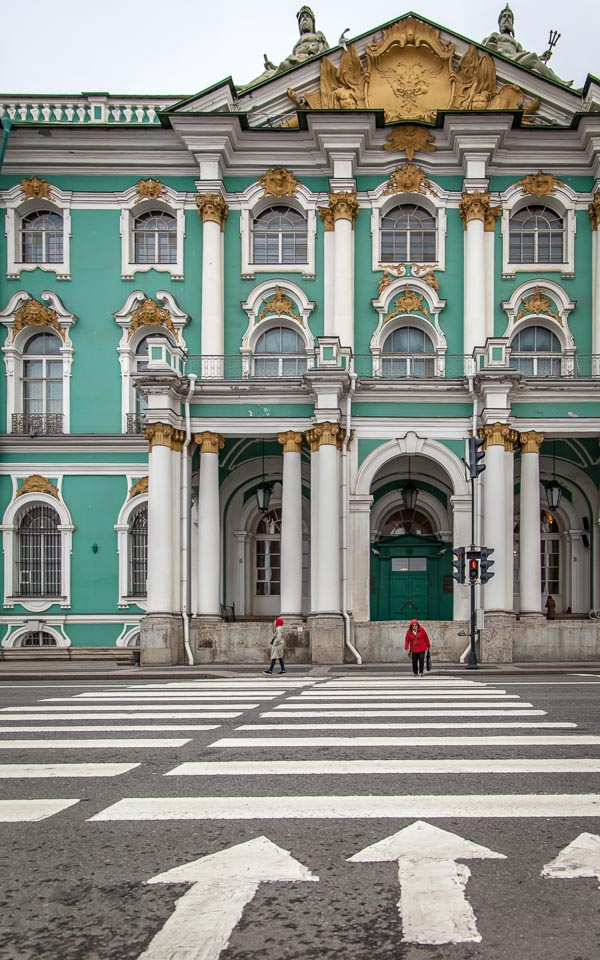
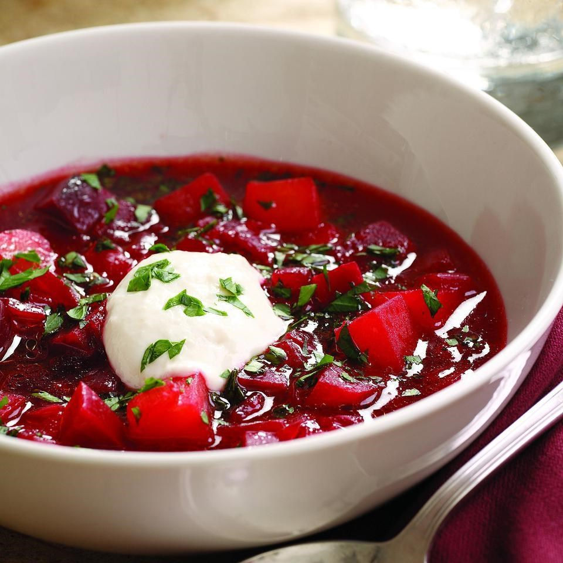
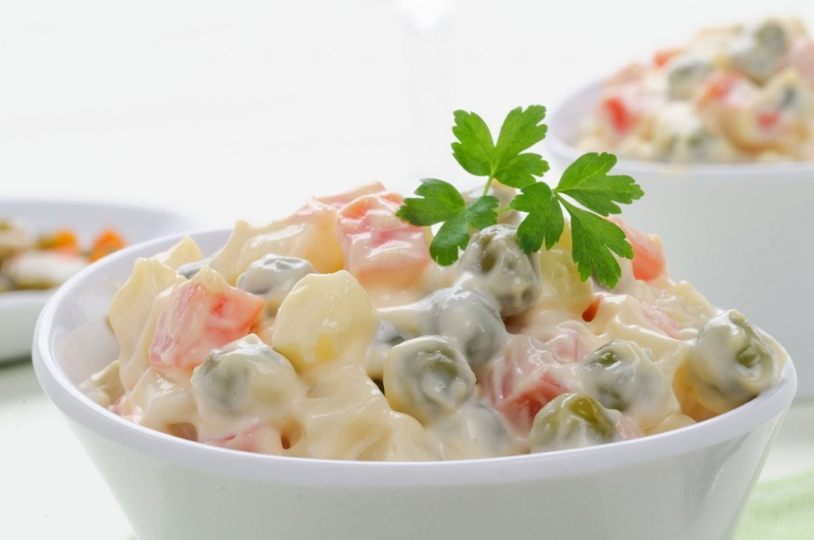

St Petersburg was the stop that most excited me on my recent Princess Cruise through the Baltic Sea. The best thing about visiting Russia on a cruise is that you don’t require a visa (which can be costly and time-consuming) if you have booked yourself on an authorised excursion before arrival.
While that may sound like you are going to be herded around under a watchful eye, in reality, it merely means that you’ll be guided through some of the top sights in the city (our guide was terrific and very open to all conversation topics) as well as being given some free time to explore on your own.
Peter and Paul Fortress
Peter and Paul fortress sits on one of the many canals and waterways which make up the island collective of St Petersburg.
Originally built to protect the city from attacks from the Swedish, if you are around at mid-day, you can still hear the daily cannon firing during your visit.


Hermitage Museum
Within just a few minutes of entering the Hermitage Museum, a grand building and formerly the private museum of Catherine the Great, it is one of the best architecture I had ever seen.
Being the largest museum in Russia and home to about three million pieces of art you’d think that what was adorning the walls would be the unique part, but actually, the grandeur of each room and hall is what had me truly mesmerised.


Eating Local Food
The main ingredient of the Borscht soup is beetroot, which gives the dish its recognisable red colour. People can eat borscht hot or cold, depending on the time of year. Traditional borscht is served with a tablespoon, or more, of sour cream and small savoury buns known as pampushki.

Olivier Salad is dressed with mayonnaise, making the salad a slightly fatty affair. The other ingredients in the salad are potatoes, carrots, pickles, peas, eggs and sometimes chicken or ham, topped off with a sprinkling of dill. It can be an appetiser or a main dish, depending on the amount.

Best translated as Russian dumplings, pelmeni are very different from their Asian counterpart. The dough for pelmeni is very simple – flour, water and a bit of egg. The filling is traditionally made with different meats, although modern versions include vegetarian stuffings. When served with a sweet filling, such as berries or cottage cheese, the dish is called vareniki and is slightly different in shape and size, but it’s equally delicious.